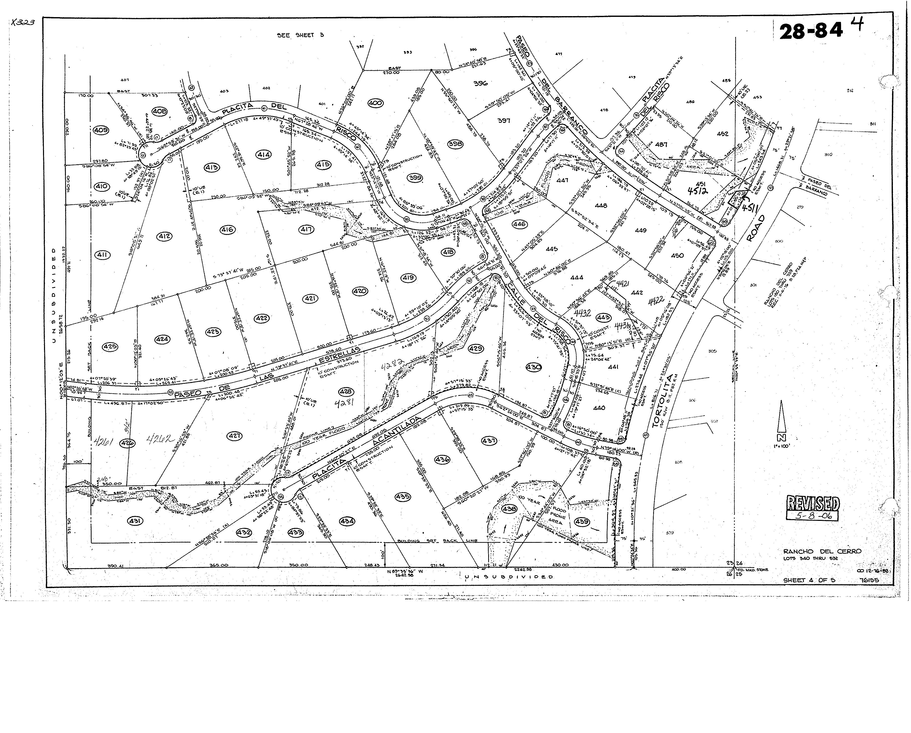

TOP
HOME RENO
LINKS
Our Tucson Home - Name Pending
Google Drive
Inspection Report
Pima County
Pima Maps
5601 W Placita Acantilada
Tucson, AZ 85745
Home Renovation Projects
Quick Links
Link
to something
Link
to another thing.

Original Plot Map with our Plot 435